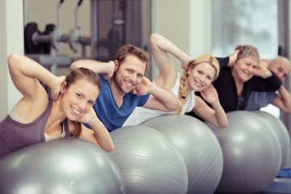

Oferujemy terapię pacjentów z różnych grup
Zajmujemy się rehabilitacją ruchową z dziedziny ortopedii, sportu, onkologii, rehabilitacji okołoporodowej, zespołów bólowych kręgosłupa, rehabilitacji dzieci i wad postawy młodzieży oraz dorosłych.
Ortopedia
Terapia z zakresu ortopedii – w przypadku urazów, złamań, uszkodzeń kolan - po artroskopii, uszkodzeniach troczków, skręceniach, zwichnięciach stawów skokowych,...
Dowiedz się więcejWady postawy
Terapia wad postawy – skoliozy, ocena sylwetki, terapia celowana – skoliozy, stopy płaskiej, koślawej, kolan koślawych, szpotawych, zespoły przeciążeniowe, bólowe...
Dowiedz się więcej

Sport
Terapia z zakresu sportu – przeciążenia, nadwyrężenia, łokieć tenisisty, zamrożony bark, terapia Achillesa...
Dowiedz się więcej